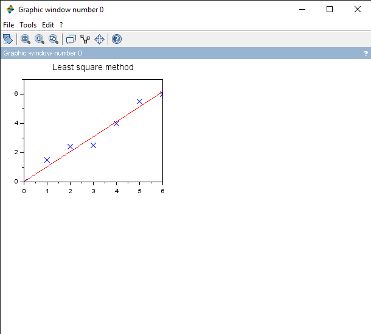
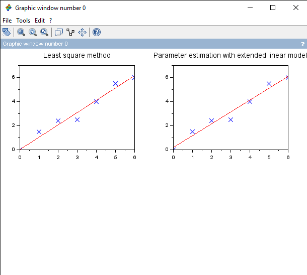
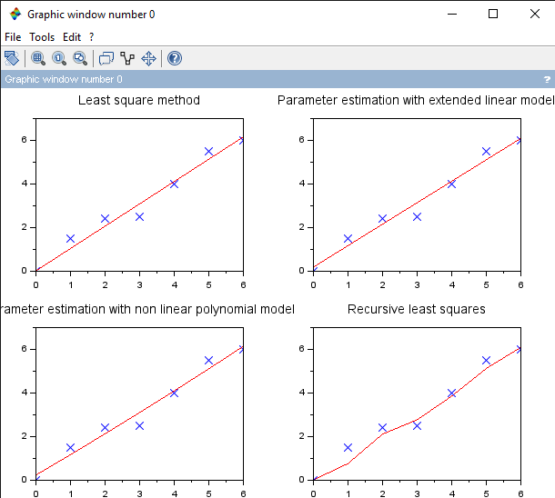

Least Squares for Static Process
Problem Statement
- Use least squares method for parameter estimation.
Solution
Step-by-Step Solution
Note: You can run individual commands in
scilab consoleto see what each command does.
-
Initialise variable required and the
yvector.// Least square method clc; clear; clf; //y = [0 1.1 2.4 2.9 4 5.2 6]'; y = [0 1.5 2.4 2.5 4 5.5 6]'; y_avg = sum(y)/length(y); -
Use
simple linear least squaresto find the parameter. Then plotting the graph.u = [0 1 2 3 4 5 6]'; a_hat = inv(u'*u)*u'*y; y_hat = a_hat * u; Q = 0 num_r2 = 0 den_r2 = 0 subplot(2, 2, 1) title("Least square method") for i = 1:length(y) e = y(i) - y_hat(i) Q = Q + e^2; num_r2 = num_r2 + (y_hat(i) - y_avg)^2; den_r2 = den_r2 + (y(i) - y_avg)^2; plot(u(i), y(i), "bx") end coeff_deter = num_r2/den_r2; disp("Least Square method") disp("Estimated parameter: ", a_hat) disp("Value error function: ", Q) //disp("Coefficient of determination R^2: ", coeff_deter) plot(u, y_hat, "r")
-
Use
extended linear model LSfor finding parameters. Then plotting the graph.// Least square method with extended linear model U = [0 1 2 3 4 5 6; 1 1 1 1 1 1 1]'; A_hat = inv(U'*U)*U'*y; Y_hat = A_hat(1)*U(:, 1) + A_hat(2); Q_e = 0; num_r2 = 0 den_r2 = 0 subplot(2, 2, 2) title("Parameter estimation with extended linear model") for i = 1:length(y) e = y(i) - Y_hat(i); Q_e = Q_e + e^2; num_r2 = num_r2 + (Y_hat(i) - y_avg)^2; den_r2 = den_r2 + (y(i) - y_avg)^2; plot(U(i, 1), y(i), "bx") end coeff_deter_e = num_r2/den_r2; disp("Parameter estimation with extended linear model") disp("Estimated parameter: ", A_hat) disp("Value error function: ", Q_e) //disp("Coefficient of determination R^2: ", coeff_deter_e) plot(U(:, 1), Y_hat, "r")
-
Use
non-linear polynomial modelfor parameter estimation.// Parameter Estimation with non linear polynomial model Up = [0 1^2 2^2 3^2 4^2 5^2 6^2; 0 1 2 3 4 5 6; 1 1 1 1 1 1 1;]'; Ap_hat = inv(Up'*Up)*Up'*y; Yp_hat = Ap_hat(1)*Up(:, 2)^2 + Ap_hat(2)*Up(:, 2) + Ap_hat(3); Qp = 0; subplot(2, 2, 3) title("Parameter estimation with non linear polynomial model") for i = 1:length(y) e = y(i) - Yp_hat(i); Qp = Qp + e^2; num_r2 = num_r2 + (Yp_hat(i) - y_avg)^2; den_r2 = den_r2 + (y(i) - y_avg)^2; plot(Up(i, 2), y(i), "bx") end coeff_deter_p = num_r2/den_r2; disp("Parameter estimation with non linear polynomial model") disp("Estimated parameter: ", Ap_hat) disp("Value error function: ", Qp) //disp("Coefficient of determination R^2: ", coeff_deter_p) plot(Up(:, 2), Yp_hat, "r")
-
Use
recursive least squaresfor parameter estimation of static processes.// Recursive least squares alpha = 1 m = length(y) S = alpha*eye(m, m) a_hat = zeros(m, 1) Q = 0 num_r2 = 0 den_r2 = 0 // Algorithm for k = 1:m-1 gamma_func(k) = (1/(u(k+1)'*S(k)*u(k+1) + 1))*S(k)*u(k+1); a_hat(k+1) = a_hat(k) + gamma_func(k)*(y(k+1) - u(k+1)'*a_hat(k)); S(k+1) = (eye(1, 1) - gamma_func(k)*u(k+1)')*S(k); end for i = 1:m yr_hat(i) = a_hat(i)*u(i); e = y(i) - yr_hat(i); Q = Q + e^2; num_r2 = num_r2 + (y_hat(i) - y_avg)^2; den_r2 = den_r2 + (y(i) - y_avg)^2; end coeff_deter = num_r2/den_r2; disp("Least Square method") disp("Estimated parameter: ", a_hat) disp("Value error function: ", Q) //disp("Coefficient of determination R^2: ", coeff_deter) subplot(2, 2, 4) title("Recursive least squares") plot(u, yr_hat, "r") plot(u, y, "bx")
Results